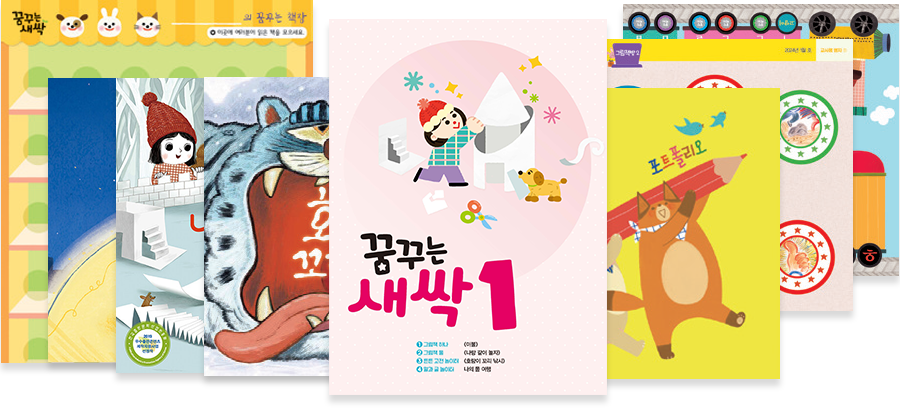
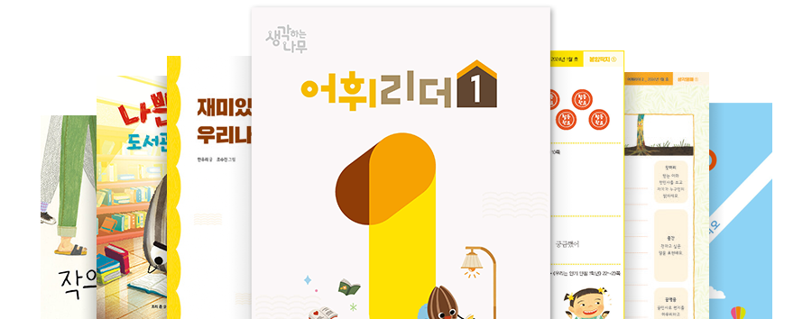
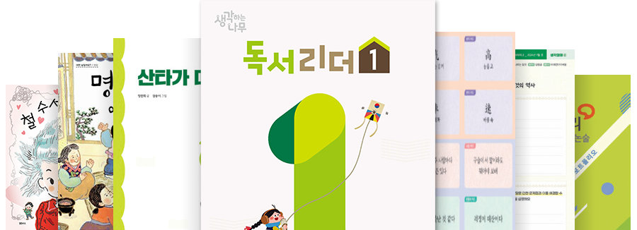
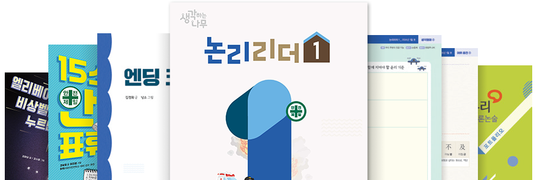
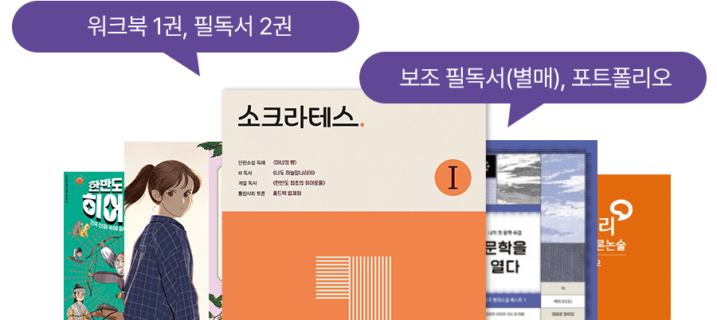
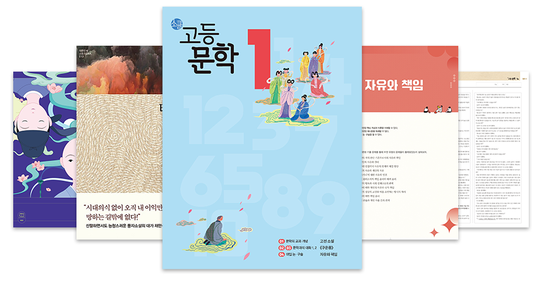

6·7세
꿈꾸는 새싹 1·2
문학 그림책, 정보 그림책, 옛이야기를 읽습니다.
그림책 깊이 읽기와 언어·듣기·인성·주제 통합 활동으로 독서 습관을 만들고 초등 학습을 준비합니다.
그림책을 깊이 읽고 듣기·말하기·놀이 활동으로
상상력과 언어 감각을 기릅니다.

6·7세
문학 그림책, 정보 그림책, 옛이야기를 읽습니다.
그림책 깊이 읽기와 언어·듣기·인성·주제 통합 활동으로 독서 습관을 만들고 초등 학습을 준비합니다.
학년별 읽기 수준에 맞춰 어휘와 배경지식을 쌓고,
토론에서 나온 생각을 문장과 글로 정리합니다.

초등 1·2학년

초등 3·4학년

초등 5·6학년
문학과 비문학을 두루 읽습니다.
글에서 근거를 골라 자기 의견을 설명합니다.

중등 1·2·3학년
자료마다 관점과 논지가 어떻게 다른지 비교해 읽습니다.
생각에 순서를 세워 설득력 있는 글로 완성합니다.

고등 1·2·3학년
교과와 수능에 연결되는 문학 작품과 비문학 자료를 깊이 읽습니다.
작품과 자료를 비판적으로 분석하고, 수행평가·논술·면접에 필요한 표현을 연습합니다.
학년별 교과 주제와 읽기 수준을 반영하고 매달 새로운 필독서와 교재를 활용합니다. 과천지부의 실제 반 편성과 교재는 상담에서 확인할 수 있습니다.
부가 프로그램
초등 3학년 이상 심화 과정과 함께 4학년 한국사, 5학년 세계 문화·지리, 6학년 세계사 프로그램을 선택할 수 있습니다.
초등 고학년 한국사 특강과 중등 문학·한국사 특강이 별도 기간 과정으로 운영됩니다.
비문학 독해 원리를 익히는 특강과 독서 수준·흥미·전략·태도를 확인하는 독서 진단을 상담할 수 있습니다.
학생의 학년과 현재 독서 습관을 먼저 확인합니다. 세부 교재와 수업 구성은 상담에서 안내합니다.
과정 상담